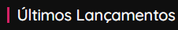
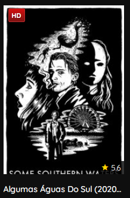
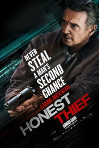

Sinopse: Após a morte de sua namorada,
um músico sem rumo se transforma em um sonho febril que dobra o gênero.
Sinopse: Após a morte de sua namorada,
um músico sem rumo se transforma em um sonho febril que dobra o gênero.

Sinopse: Guiado por um instinto de rebelião e um equivalente senso de justiça, Ciccio Paradiso decide melhorar a vida dos trabalhadores italianos na década de 1950. Mas, tudo se complica quando ele se apaixona pela filha de um latifundiário, o que o coloca dividido entre dois mundos opostos.

Sinopse: Tom Carter é um especialista em demolição e uma lenda entre os criminosos. Ele conseguiu roubar uma fortuna sem nunca ter sido pego, mas tudo muda quando ele se apaixona por Annie e decide deixar o crime para trás.
Sinopse: Tom Carter é um especialista em demolição e uma lenda entre os criminosos. Ele conseguiu roubar uma fortuna sem nunca ter sido pego, mas tudo muda quando ele se apaixona por Annie e decide deixar o crime para trás.